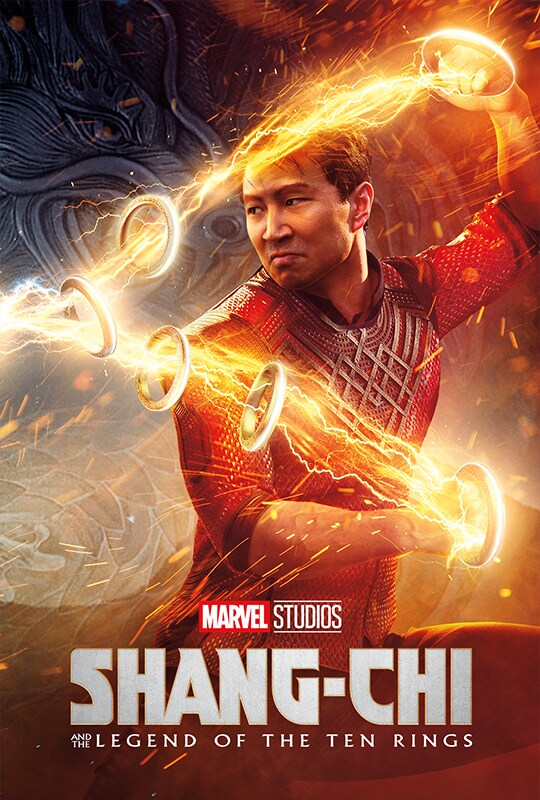
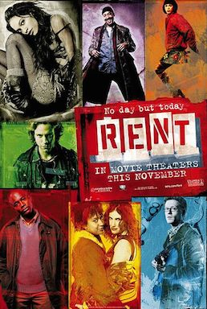
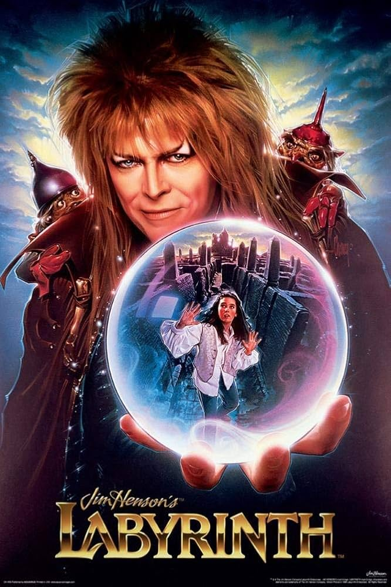
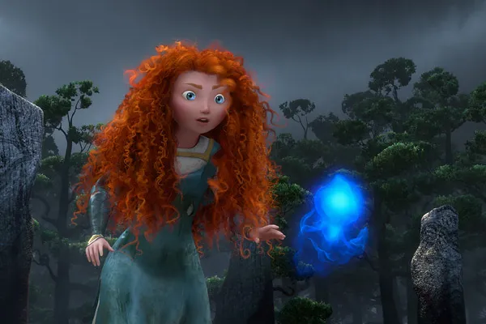
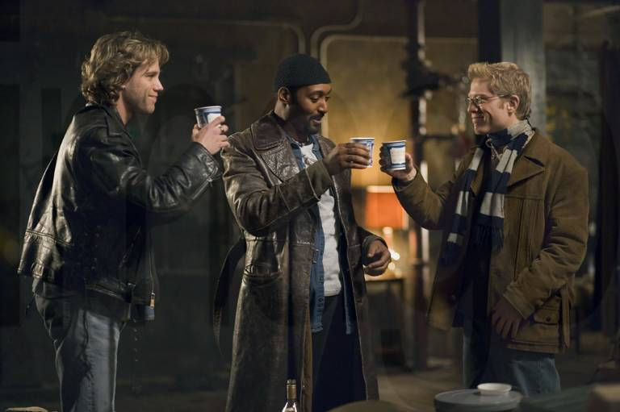
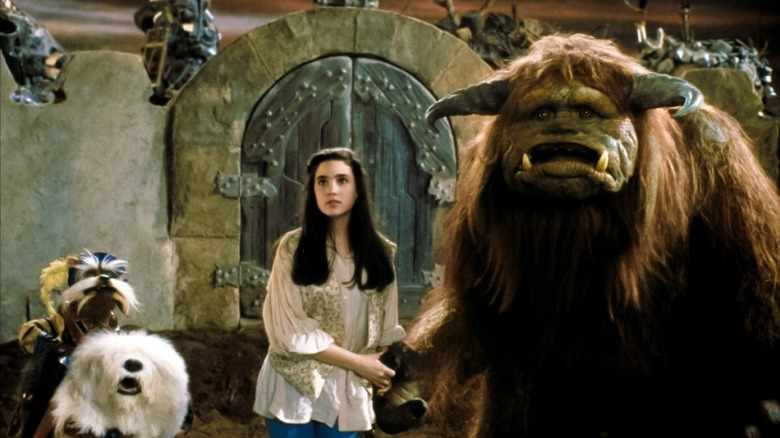

PG Length:1hr 34min Rating:
Determined to make her own path in life, Princess Merida defies a custom that brings chaos to her kingdom. Granted one wish, Merida must rely on her bravery and her archery skills to undo a beastly curse.
Merida, an impulsive young lady and daughter to King Fergus and Queen Elinor, is determined to carve her own path in life. Defying the age-old and sacred customs, Merida's actions inadvertently unleash chaos and fury with the other Scottish Lords, and in the process she stumbles upon an eccentric and wise old woman who grants her ill-fated wish. The ensuing peril forces Merida to discover the true meaning of bravery in order to undo a beastly curse before it's too late.
Back to Top
PG-13 Length:2hr 12min Rating:
Shang-Chi, the master of weaponry-based Kung Fu, is forced to confront his past after being drawn into the Ten Rings organization.
Xu Shang-Chi is the son of Xu Wenwu and Ying Li, the older brother of Xu Xialing, and the current wielder of the Ten Rings. Since his childhood, Shang-Chi underwent a brutal training regime that turned him into a formidable martial artist; however, on a mission to avenge his mother's death, he chose to abandon the Ten Rings and leave his family past behind. Seeking to start a new life outside of his father's shadow, Shang-Chi fled to the United States, maintaining a peaceful life in San Francisco under the name Shaun with his friend Katy Chen. Eventually, the Ten Rings targeted Shang-Chi once again, so he joined forces with Chen and his sister Xialing in order to oppose Wenwu in his quest to breach the Dark Gate of Ta Lo, which unleashed the Dweller-in-Darkness and the Soul Eaters. When his father sacrificed himself to save him, Shang-Chi inherited his mystical rings to defeat the Soul Eaters. Returning home, he began studying the rings when they emitted a signal.
Back to Top
PG-13 Length:2hr 15min Rating:
In New York City's gritty East Village, a group of bohemians strive for success and acceptance while enduring the obstacles of poverty, illness and the AIDS epidemic.
This rock opera tells the story of one year in the life of a group of bohemians struggling in modern day East Village New York. The story centers around Mark and Roger, two roommates. While a former tragedy has made Roger numb to life, Mark tries to capture it through his attempts to make a film. In the year that follows, the group deals with love, loss, AIDS, and modern day life in one truly powerful story.
Back to Top
PG Length:1hr 45min Rating:
Teenager Sarah recklessly wishes her baby half-brother, Toby, away to the Goblin King, Jareth. When Jareth kidnaps Toby, Sarah has 13 hours to navigate a treacherous, magical maze to rescue him or he will become a goblin forever.
Sarah is forced by her father and her stepmother to babysit her baby stepbrother, Toby, while they are out. He does not stop crying and she wishes that he would be taken away. Out of the blue, he stops crying and when she looks for him in his crib, she learns that her wish was granted, and the Goblin King Jareth has taken him to his castle in the Goblin City in the middle of a labyrinth. Sarah repents and asks Jareth to give him back, but Jareth tells her that she has to rescue him before midnight. Soon she teams up with some allies. Will they rescue Toby in time?
Back to Top